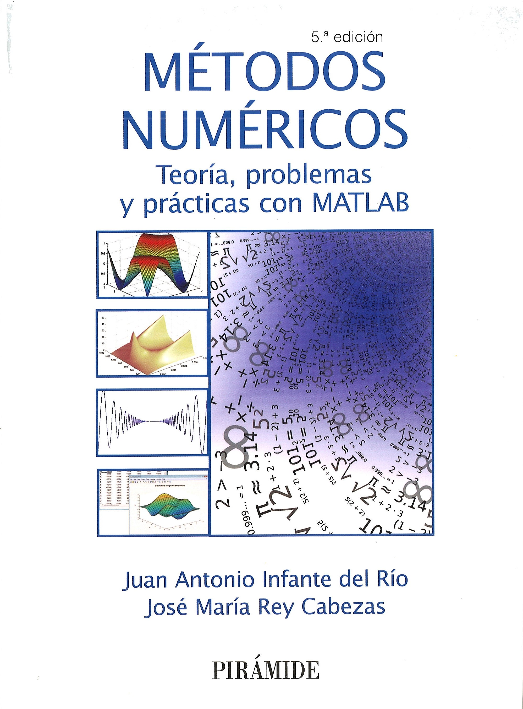

Este
libro, publicado en septiembre de 1999 (1ª Edición, ISBN: 84-368-1390-1), reeditado en septiembre de 2002 (2ª Edición, ISBN: 84-368-1724-9, enero de 2007 (3ª
Edición, ISBN: 978-84-368-2090-4), marzo de 2015 (4ª
Edición, ISBN: 978-84-368-3325-6) y septiembre
de 2018 (5ª
Edición, ISBN: 978-84-368-3983-8) por
Ediciones Pirámide
(Grupo Anaya), está escrito tras años de experiencia de los
autores en la docencia de asignaturas relacionadas con el
Análisis Numérico. Su objetivo es modesto, pero no por ello
carente de importancia. Por una parte, se pretende
proporcionar al alumno una primera toma de contacto con las
técnicas numéricas que le sirva para conocer un amplio
catálogo de métodos que aproximan las soluciones de los
problemas abordados (esencialmente, ecuaciones y sistemas
lineales y no lineales, interpolación, derivación e
integración; véase el índice). Por
otra, se intenta cimentar una sólida base teórica que permita
conocer los límites de validez y condiciones de aplicación de
los métodos, así como el ulterior estudio en profundidad de
otras técnicas más sofisticadas.
Cada
capítulo tiene una sección de problemas de los que, alrededor
de la mitad, se resuelven con todo detalle; la escasez de
textos que incluyan una buena cantidad de problemas resueltos
en su totalidad es un valor añadido de esta obra. En algunos
problemas se recogen resultados complementarios a los
expuestos en la parte teórica, enunciados de forma que su
resolución sea abordable.
En la
última sección de cada capítulo se enuncian una serie de prácticas de ordenador,
pensadas para ser implementadas en MATLAB, las cuales
permitirán entender en profundidad los métodos programados.
Además, en el último capítulo se recoge una somera introducción a MATLAB.